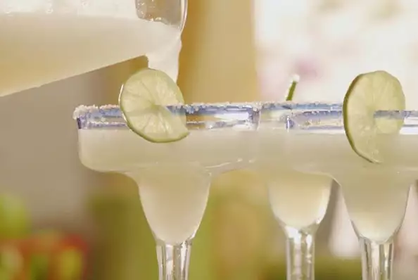

Lemonade Margaritas
I have been asked by everyone, 'How do you make your margaritas?' Everyone says I make the best. I like them, maybe you will too.

Ingredients
- 1 (6 ounce) can frozen limeade concentrate
- 6 fluid ounces tequila
- 2 fluid ounces triple sec
Directions
- Fill blender with crushed ice. Pour in limeade concentrate, tequila and triple sec. Blend until smooth. Pour into glasses and serve.